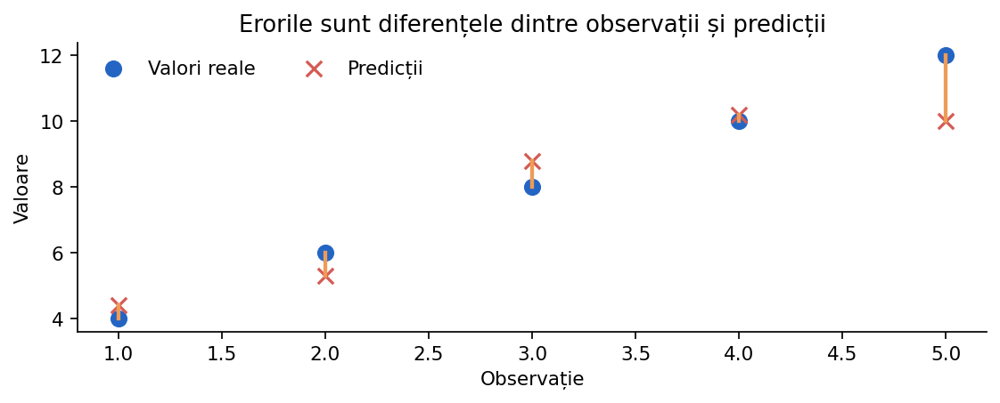

Metrici de evaluare
Un model nu este bun fiindcă a fost antrenat, ci fiindcă face predicții utile pe observații pe care nu le-a văzut. În această lecție învățăm să cuantificăm erorile și să alegem metrica potrivită problemei.
De ce avem nevoie de metrici?
Înainte să calculezi o metrică, verifică tipul problemei: regresie dacă rezultatul este un număr; clasificare dacă rezultatul este o etichetă. Pentru clasificare binară pot fi relevante probabilitățile estimate, nu doar clasele prezise.
Regresie
Comparăm o valoare numerică reală cu estimarea produsă de model: de exemplu prețul real al unui apartament și prețul prezis.
Clasificare
Comparăm eticheta reală cu eticheta prezisă sau cu probabilitatea atribuită fiecărei clase.

y_real = [4, 6, 8, 10, 12] y_pred = [4.4, 5.3, 8.8, 10.2, 10.0] for real, pred in zip(y_real, y_pred): print(f"real={real:4.1f}, pred={pred:4.1f}, eroare={real-pred:+.1f}")
Separarea datelor: train, validare și test
Regulă practică: pentru orice preprocesare
care învață statistici (medie, deviație standard, vocabular, valori de imputare), utilizează fit
doar pe train și transform pe validation/test. În scikit-learn, Pipeline
ajută la evitarea acestor erori.
Exemplul din cod împarte datele inițial în 32 observații pentru dezvoltare și 8 pentru test. Apoi 25% din cele 32 sunt folosite la validare: 24 train + 8 validare + 8 test.
60% din date
20% din date
Dacă media sau deviația standard sunt calculate pe întregul set înainte de
împărțire, informații din validare/test pot influența antrenarea. Operațiile
fit se efectuează doar pe train; transform se aplică ulterior și
celorlalte subseturi.
from sklearn.model_selection import train_test_split X = [[i] for i in range(40)] y = [2 * i + (i % 4) for i in range(40)] X_dev, X_test, y_dev, y_test = train_test_split( X, y, test_size=0.2, random_state=42 ) X_train, X_val, y_train, y_val = train_test_split( X_dev, y_dev, test_size=0.25, random_state=42 ) print(len(X_train), len(X_val), len(X_test))
Eroare, eroare absolută și eroare pătratică
y și predicția ŷ,
eroarea semnată este e = y − ŷ. Semnul ne arată dacă am supraestimat sau subestimat. Dacă
am face media erorilor semnate, cele pozitive și negative s-ar putea anula! De aceea folosim valoarea
absolută |e| sau pătratul e².Exemplu: erorile +5 și −5 au media 0, dar modelul nu este perfect. MAE va fi 5, iar MSE va fi 25.
În această lecție folosim convenția e = valoarea reală − predicția.
Dacă predicția este mai mare decât valoarea reală, eroarea y − ŷ este negativă
(supraestimare). Dacă predicția este mai mică, eroarea este pozitivă (subestimare).
erori = [5, -5] print(sum(erori) / len(erori)) print(sum(abs(e) for e in erori) / len(erori)) print(sum(e ** 2 for e in erori) / len(erori))
MAE — Mean Absolute Error
Exemplu: pentru erorile 1, −2, 3, MAE = (1+2+3)/3 = 2.
n este numărul observațiilor; |·| înseamnă valoare absolută.
Pornim de la exact aceleași trei observații din exemplul Python. Calculăm pentru fiecare diferența, apoi modulul acesteia:
| Observația i | yᵢ (real) | ŷᵢ (prezis) | eᵢ = yᵢ − ŷᵢ | |eᵢ| | eᵢ² |
|---|---|---|---|---|---|
| 1 | 2 | 3 | −1 | 1 | 1 |
| 2 | 6 | 4 | +2 | 2 | 4 |
| 3 | 7 | 10 | −3 | 3 | 9 |
| Total | 6 | 14 | |||
Predicțiile diferă, în medie, cu 2 unități de valorile reale. MAE este 0 numai dacă toate predicțiile sunt exacte.
def mae(reale, prezise): n = len(reale) if n == 0: raise ValueError("Nu există observații") total = 0 for y, p in zip(reale, prezise): total += abs(y - p) return total / n print(mae([2, 6, 7], [3, 4, 10]))
MSE și RMSE — penalizarea greșelilor mari
În problemele de regresie din concurs, dacă evaluatorul folosește RMSE, nu alege modelul după MAE doar fiindcă are această metrică mai mică.
Folosim tabelul precedent: pătratele erorilor sunt 1, 4, 9. MSE este media lor, iar RMSE este rădăcina pătrată a rezultatului.
Dacă ținta este măsurată în lei, MSE are unitatea lei², iar RMSE revine la lei. Din acest motiv RMSE se interpretează mai ușor în unitatea originală a problemei.
def mse(reale, prezise): total = 0 for y, p in zip(reale, prezise): total += (y - p) ** 2 return total / len(reale) valoare = mse([1, 2, 3], [1, 3, 6]) print(f"MSE = {valoare:.3f}") print(f"RMSE = {valoare ** 0.5:.3f}")
R² — comparația cu o predicție constantă
Atenție: pentru o țintă constantă, expresia matematică standard nu este definită. Instrumentele software pot utiliza convenții explicite pentru acel caz.
ȳ este media valorilor reale; numitorul cuantifică variația acestora în raport cu media.
Luăm valorile reale [2, 4, 6]. Media lor este 4. Modelul de referință prezice mereu această medie: [4, 4, 4].
R² nu este un procent de predicții corecte. Poate fi negativ și nu este, în general, limitat inferior de 0. Dacă toate valorile reale sunt identice, numitorul formulei este 0 și se aplică o convenție explicită în bibliotecă.
from sklearn.metrics import r2_score print(r2_score([2, 4, 6], [2, 4, 6])) print(r2_score([2, 4, 6], [4, 4, 4])) print(r2_score([2, 4, 6], [10, 10, 10]))
Accuracy în clasificare
De aceea trebuie analizată distribuția claselor și, la nevoie, alte metrici precum recall sau balanced accuracy.
TP și TN sunt predicții corecte; FP și FN sunt greșeli.
corect
corect
corect
corect
corect
greșit
Există cinci exemple din clasa 0 și un singur exemplu din clasa 1. Modelul prezice mereu 0: obține 83,33% accuracy, dar detectează 0% dintre cazurile pozitive.
y_true = [0, 0, 0, 0, 0, 1] y_pred = [0, 0, 0, 0, 0, 0] corecte = sum(a == b for a, b in zip(y_true, y_pred)) print(f"Accuracy = {corecte / len(y_true):.3f}")
Precision, recall și F1
Exemplu: într-o problemă de detectare a mesajelor spam, multe alarme false pot fi costisitoare; într-o problemă de detectare a defecțiunilor grave, ratarea cazurilor poate fi mai periculoasă.
| Prezicere: pozitiv (1) | Prezicere: negativ (0) | |
|---|---|---|
| Real: pozitiv (1) | TP = 2detectate corect | FN = 2pozitive ratate |
| Real: negativ (0) | FP = 1alarmă falsă | TN = 1negative corecte |
Precision = 2/3: dintre cele trei exemple semnalate ca pozitive, două chiar sunt pozitive. Recall = 2/4: dintre cele patru exemple realmente pozitive, numai două au fost detectate.
from sklearn.metrics import precision_score, recall_score, f1_score y_true = [1, 1, 1, 1, 0, 0] y_pred = [1, 1, 0, 0, 1, 0] print(precision_score(y_true, y_pred)) print(recall_score(y_true, y_pred)) print(f1_score(y_true, y_pred))
Probabilități: log-loss, ROC-AUC și PR-AUC
ROC-AUC măsoară calitatea ordonării exemplelor pozitive față de negative de-a lungul pragurilor; PR-AUC / Average Precision evidențiază relația precision–recall și poate fi deosebit de informativă când clasa pozitivă este rară. Nu confunda ROC-AUC cu accuracy și nici PR-AUC cu F1 calculat la un singur prag.
pᵢ reprezintă probabilitatea atribuită clasei pozitive, iar yᵢ ∈ {0, 1} este eticheta reală. Logaritmul este natural.
| Etichetă reală | Probabilitate p | Penalizare −ln(prob. clasei adevărate) |
|---|---|---|
| 1 | 0,90 | −ln(0,90) ≈ 0,105 |
| 0 | 0,20 | −ln(0,80) ≈ 0,223 |
ROC-AUC rezumă cât de bine ordonează modelul exemplele pozitive înaintea celor negative, folosind toate pragurile. Average Precision (AP) rezumă curba precision–recall printr-o sumă ponderată a valorilor precision. AP nu este întotdeauna identică cu aria trapezoidală PR-AUC; verifică implementarea cerută.
Pentru scorurile date, toate exemplele pozitive au probabilități mai mari decât toate negativele: ROC-AUC = 1 și AP = 1, deși log-loss ≈ 0,3328 nu este zero. Cele trei metrici măsoară aspecte diferite.
from sklearn.metrics import roc_auc_score, log_loss, average_precision_score y_true = [0, 1, 0, 1, 0, 1] p = [0.12, 0.88, 0.31, 0.70, 0.45, 0.66] print('ROC AUC:', roc_auc_score(y_true, p)) print('AP:', average_precision_score(y_true, p)) print('Log-loss:', log_loss(y_true, p))
Media micro, macro și weighted
| Clasă | Număr exemple (suport) | F1 pe clasă |
|---|---|---|
| Clasa A | 90 | 0,95 |
| Clasa B | 10 | 0,40 |
Înainte de a calcula precision și recall, însumăm TP, FP și FN pentru toate clasele. În clasificarea multiclasă obișnuită, cu câte o singură etichetă reală și prezisă pe exemplu, micro-F1 coincide cu accuracy. Macro-F1 evidențiază mai bine clasele rare.
from sklearn.metrics import classification_report y_true = [0, 0, 0, 0, 1, 1, 2] y_pred = [0, 0, 0, 1, 1, 0, 0] print(classification_report(y_true, y_pred, zero_division=0))
Metricile din scikit-learn și scorer-ul competiției
model.score(X, y) nu reprezintă aceeași metrică
pentru toate modelele: deseori este accuracy pentru clasificatori și R² pentru regresori. Când
competiția cere MAE, macro-F1 sau log-loss, calculează explicit metrica solicitată.La
cross-validation, scoring="neg_mean_absolute_error" returnează valori negative deoarece
API-ul de scor maximizează valoarea. O valoare -2 este mai bună decât -5: MAE corespunzător este 2,
respectiv 5.
| Ce evaluăm? | Funcția scikit-learn | Direcția bună |
|---|---|---|
| Regresie · MAE | mean_absolute_error(y, pred) |
mai mic ↓ |
| Regresie · RMSE | root_mean_squared_error(y, pred) |
mai mic ↓ |
| Regresie · R² | r2_score(y, pred) |
mai mare ↑ |
| Clasificare · F1 macro | f1_score(y, pred, average="macro") |
mai mare ↑ |
| Clasificare · log-loss | log_loss(y, probabilitati) |
mai mic ↓ |
În cross-validation, scoring="neg_mean_absolute_error"
întoarce un scor care trebuie maximizat; o eroare mai mică produce un scor
mai mare (mai aproape de zero).
Respectă exact metrica oficială, tipul ieșirii cerute (clasă sau probabilitate) și modul în care sunt agregate scorurile. Nu compara rezultatele unor modele folosind subseturi ori protocoale diferite.
from sklearn.metrics import mean_absolute_error from sklearn.dummy import DummyRegressor model = DummyRegressor(strategy='mean') X = [[1], [2], [3], [4]] y = [2., 3., 4., 9.] model.fit(X, y) pred = model.predict(X) print('R²:', model.score(X, y)) print('MAE:', mean_absolute_error(y, pred))
De reținut pentru ONIA
Compară metodele în condiții corecte: același protocol de evaluare, date de validare separate și o metrică relevantă pentru problema rezolvată. Testul final nu trebuie folosit la alegerea hiperparametrilor.
Exemplele din această lecție sunt didactice; la competiție verifică întotdeauna enunțul, formatul datelor și metrica oficială.
Pentru detalii de implementare: Model evaluation — scikit-learn și Common pitfalls.